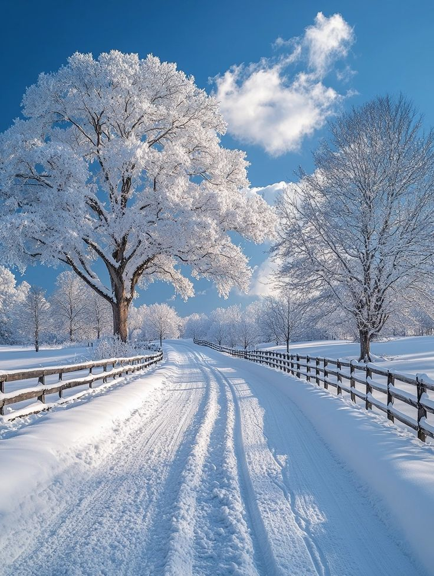
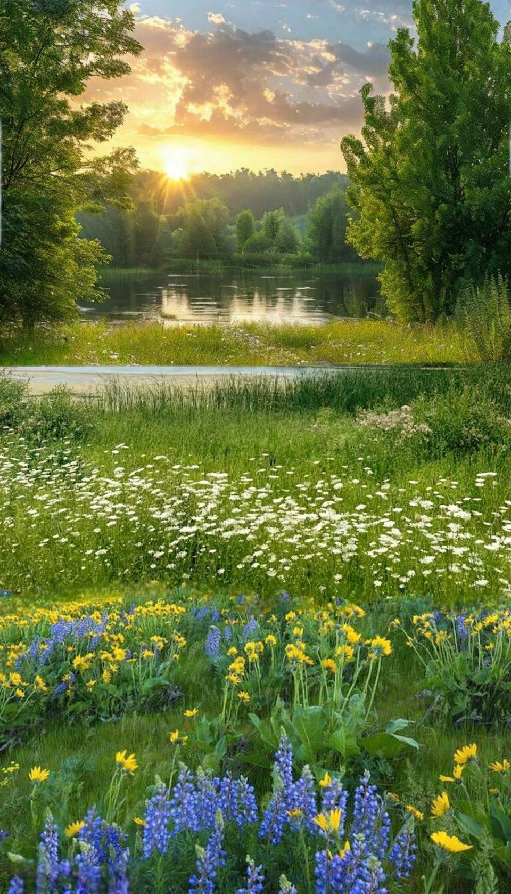
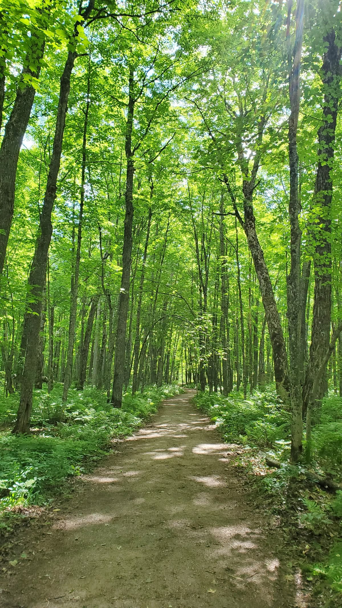

This website has some subtext that goes here under the main title.
It's a smaller font and the color is lower contrast.
This is a placeholder for an image
Some randon information.
Autumn is generally regarded as the end of the growing season. In the autumn season, the daylight grows shorter, and animals prepare for the long, cold months ahead. The temperature starts becoming cooler during autumn.

Winter is the season that comes after autumn and before spring in the cycle of the seasons. Depending on where you live, it often brings with it colder weather and shorter days. And of course, you can't forget the chance of snow!.

The spring season is a time of year when the weather starts to change. It is a transition season between the winter and summer seasons. The days get longer and nights get shorter, the temperature is milder, and flowers bloom.

Summer or summertime is the hottest and brightest of the four temperate seasons, occurring after spring and before autumn. Daylight hours are the longest and darkness hours are the shortest, with day length decreasing as the season progresses after the solstice.
This is an inspiring quote, or a testimonial from a customer. Maybe it's just filling up space, or maybe people will actually read it. Who knows? All I know is that it looks nice.
-Thor, God of Thunder
Call to action it's time!
Sign up for our product by clicking that button right over there!